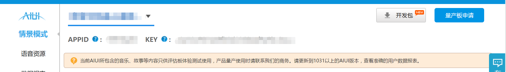

2.2. 创建配置¶
2.2.1 评估板网络配置¶
AIUI评估板支持多种配置网路的方式。
- SmartConfig
- 确保评估板上已经安装开发包中SmartConfigService.apk 并已随开机启动运行；
- 确保手机客户端已经连接到 WIFI；
- 短按评估板右下角的 Load 键，语音提示进入 SmartConfig 连网模式，等待手机发送账号、密码；
- 在手机端右上角点击快联然后设置所连接 WIFI 的账号、密码，发送给评估板。
- Windows批处理
- 评估板插上电源、开机，使用 USB 线连接电脑，配置好 ADB 的环境变量。
- 双击打开开发包中 wifi_connect_ui.bat 文件。
- 按照提示键入 WIFI 的 SSID、密码、加密方式回车即可（连接成功后会保存到系统设置，重启后会自动联网无需重新配置)。
- 同屏UI操作
- 评估板插上电源、开机，使用 USB 线连接电脑，配置好 ADB 的环境变量；
- 使用TotalControl或者Vysor，通过界面直接操作评估板WIFI配置。
2.2.2 应用配置¶
通过AIUI官网 购买评估板时会同时创建一个AIUI的应用，通过AIUI应用管理查看该 应用的APPID和KEY，如下所示：
如果无对应AIUI应用，联系购买渠道的商务创建解决。
进入AIUI开放语义配置应用需要的如天气，音乐等场景。